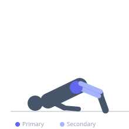
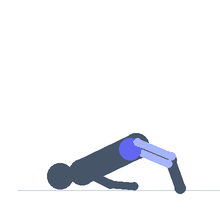

Exercise guide / Supine Bridge March
Supine Bridge March
The supine bridge march builds on the standard glute bridge by adding a single-leg marching component. While maintaining a bridge position with both hips elevated, one foot is lifted from the floor and the knee drawn toward the chest, then returned before alternating sides. This challenges the stance-side glute maximally as a hip stabilizer against rotational and lateral forces, making it a critical rehabilitation exercise for hip, knee, and lower back programs.
Primary muscles
gluteus maximus
gluteus medius
Secondary muscles
biceps femoris long head
psoas major
Stabilizers
transverse abdominis
erector spinae
Equipment
No Equipment (Bodyweight)


Starting position
- Lie on your back with knees bent and feet flat on the floor hip-width apart. Drive through both heels to raise the hips into a standard bridge position, with a straight line from knees through hips to shoulders.
Setup
- No equipment needed. A mat is recommended for comfort. Ensure a stable surface without slipping.
Steps
- Step 1: Establish the bridge position with hips fully extended and both feet on the floor.
- Step 2: While maintaining the bridge height, slowly lift one foot and draw the knee toward the chest, aiming for 90 degrees of hip flexion.
- Step 3: Hold briefly, then lower the foot back to the floor without letting the hips drop.
- Step 4: Alternate sides. Each knee lift equals one repetition.
Coaching cues
- Keep the hips level — imagine a glass of water on each hip bone that cannot spill
- Press the standing foot into the floor to maximize glute activation on the stance side
- Brace the core before you lift the foot — do not let the back arch
Breathing
- Exhale as you lift the knee. Inhale as you return the foot to the floor.
Range of motion
- The marching knee should reach 80-90 degrees of hip flexion. The hips must remain level throughout.
Tempo
- 2s lift, 1s hold, 2s lower. Alternate sides with no rest between.
Common mistakes
- Letting the hips drop or rotate when one foot leaves the floor — the bridge must stay level
- Lifting the foot too fast and losing core bracing
- Hyperextending the lower back instead of maintaining neutral spine in the bridge
Safety
- If the lower back arches excessively, reduce the bridge height or practice the standard bridge first
- Avoid if single-leg hip loading is contraindicated — consult a physiotherapist
Training
- endurance: 10–20 reps
- mobility: 8–15 reps
- endurance: 2–3 sets
- mobility: 2–3 sets
- Rest: {'endurance': 45, 'mobility': 60}